Flint Ignite: сайт digital-агенції, який нарешті працюєFlint Ignite: a digital agency website that finally works
Flint — агенція з цифрової стратегії, маркетингу і розробки з Південної Африки. Старий сайт ламався і псував враження від бренду. Ми зібрали новий на WordPress і Elementor: сторінки, блог, ілюстрації та інтеграції.Flint is a digital strategy, marketing and development agency from South Africa. Their old site was breaking and hurting the brand. We built the new one on WordPress and Elementor: pages, blog, illustrations and integrations.
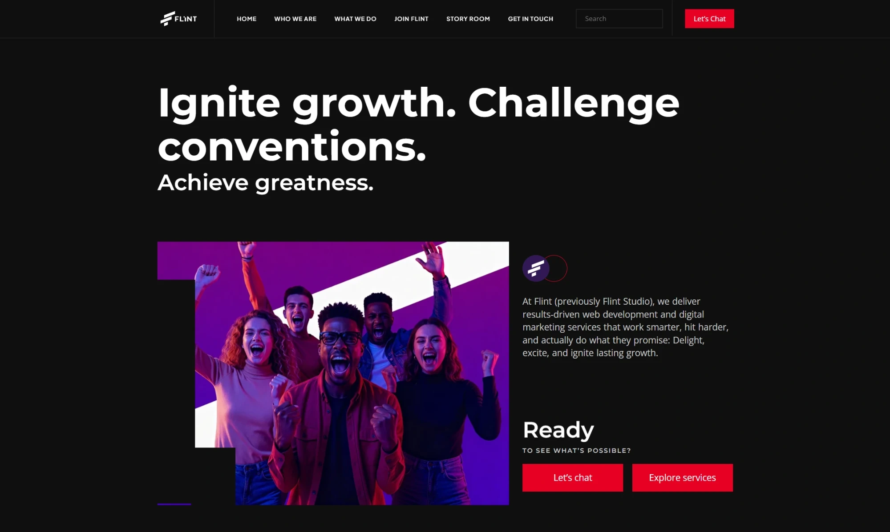
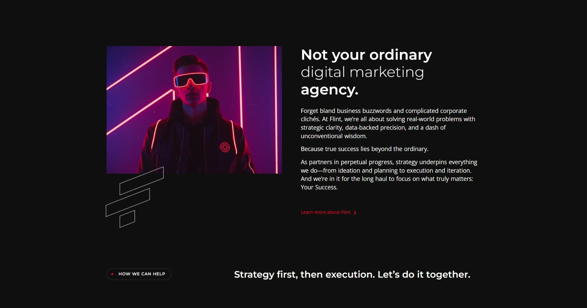
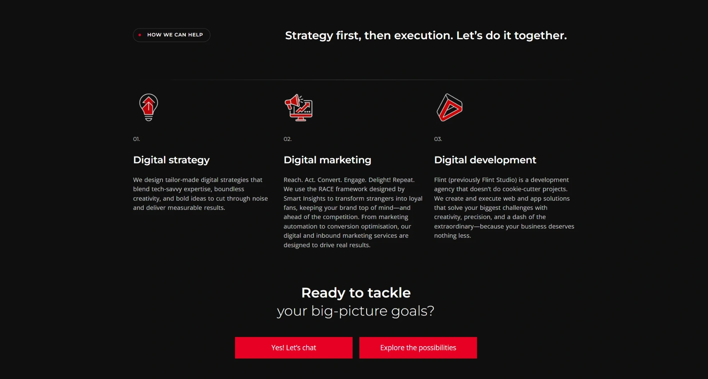
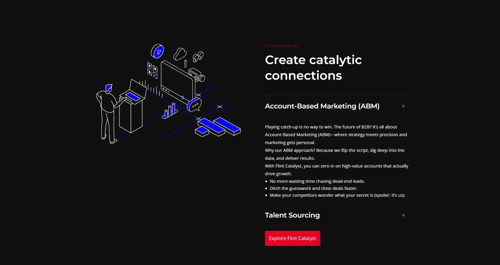
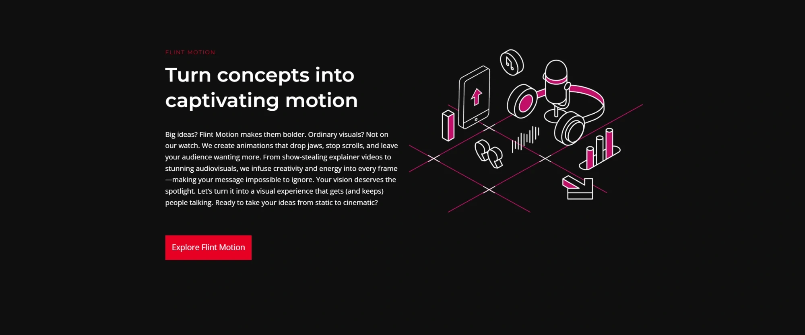
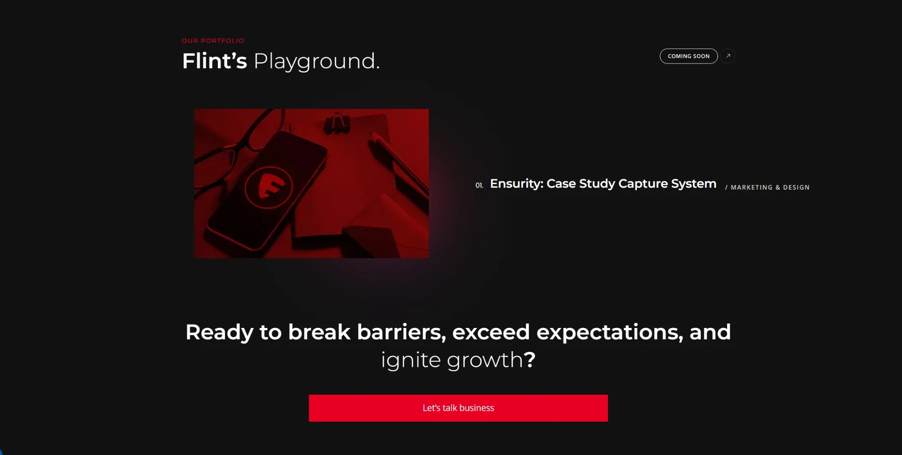
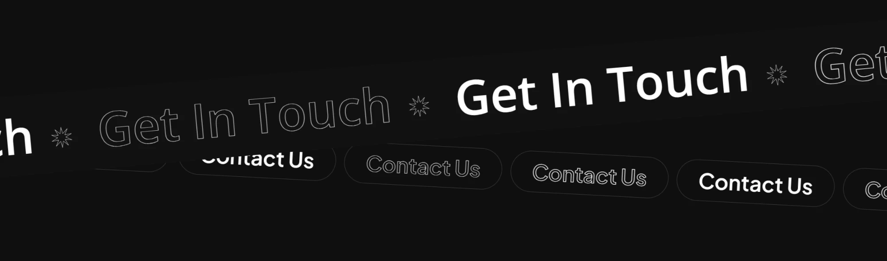
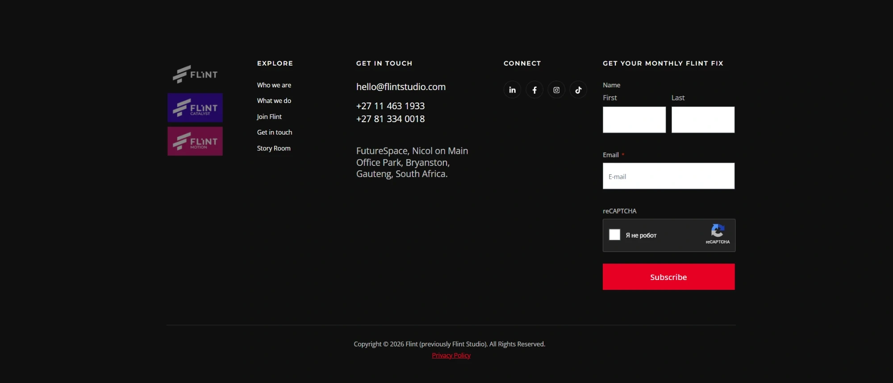
↕ Гортайте всередині вікна, щоб побачити головну сторінку↕ Scroll inside the window to see the homepage
Однаково добре на компʼютері, планшеті й телефоніWorks just as well on desktop, tablet and phone
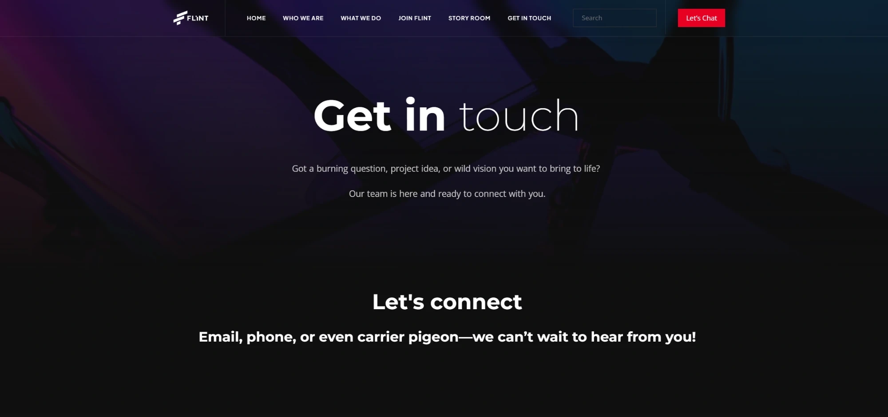
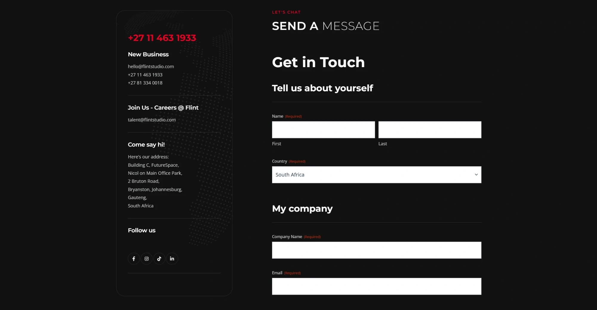
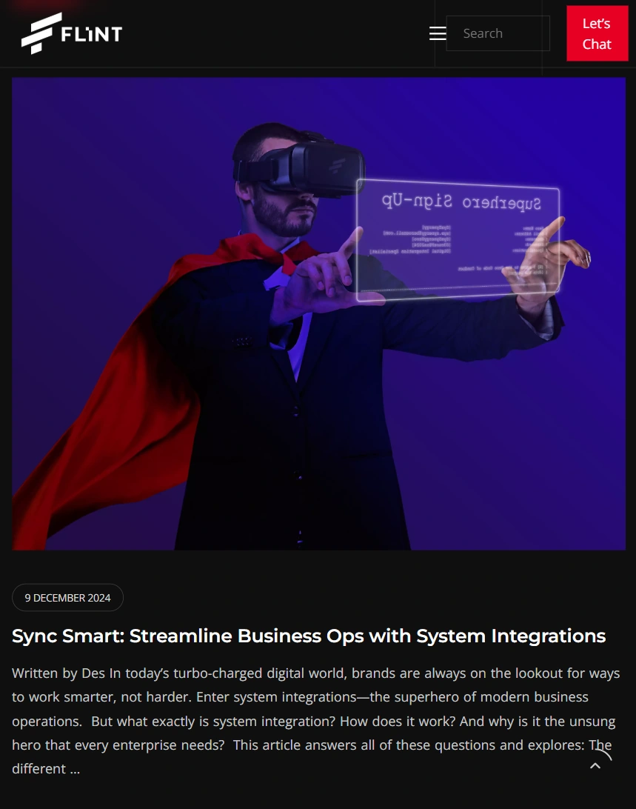
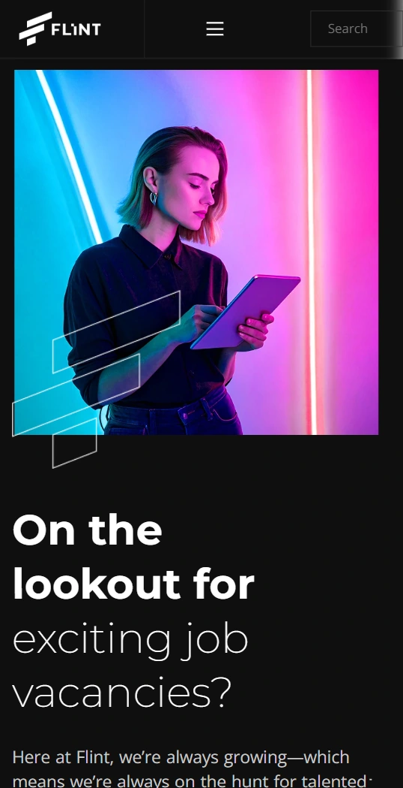
ЗадачаThe brief
Сайт агенції має приводити клієнтів, показувати експертизу і допомагати наймати людей. Старий цього не робив: частина сторінок ламалась, а шрифти й кольори відрізнялись від сторінки до сторінки.An agency site has to bring in clients, show expertise and help with hiring. The old one didn't: some pages were broken, and fonts and colours changed from page to page.
Шаблон і тексти клієнт уже обрав. Нашим завданням було зібрати з цього цілісний сайт у його фірмовому стилі.The client had already picked the template and written the copy. Our job was to turn it into one consistent site in their brand style.
Що зробилиWhat we did
- 01Сторінки сайту.Site pages. Who We Are, What We Do, Talent з вакансіями, Get in Touch, 404, юридичні сторінки. Усе адаптивне для телефону і планшета.Who We Are, What We Do, Talent with job listings, Get in Touch, 404 and legal pages. All responsive for phone and tablet.
- 02Блог Story Room.Story Room blog. Головна блогу, категорії, шаблон статті, пошук і сторінки авторів з біографіями.Blog home, categories, article template, search and author pages with bios.
- 03Ілюстрації та візуали.Illustrations and visuals. Ілюстрації для трьох напрямів послуг, іконки цінностей, білі версії логотипів клієнтів і неонові візуали з командою для сторінки вакансій.Illustrations for the three service lines, value icons, white versions of client logos and neon-style team visuals for the careers page.
- 04Єдиний стиль.One consistent style. Привели весь сайт до одних шрифтів, кольорів і розмірів заголовків. Фірмовий червоний #e70022 тепер однаковий скрізь.Brought the whole site to one set of fonts, colours and heading sizes. The brand red #e70022 is now the same everywhere.
- 05Інтеграції.Integrations. Віджет вакансій SmartRecruiters, форми Gravity Forms з новими полями, Google Tag Manager, RankMath, згода на cookies, пошук по сайту.SmartRecruiters job widget, Gravity Forms with new fields, Google Tag Manager, RankMath, cookie consent and site search.
Як працювалиHow we worked
Ми працювали як частина команди клієнта разом з їхнім копірайтером, SEO-спеціалістом, стратегом і проєктним менеджером. Правки йшли раундами через спільний бриф, де кожна сторінка мала окрему вкладку.We worked as part of the client's team alongside their copywriter, SEO specialist, strategist and project manager. Changes came in rounds through a shared brief with a tab for every page.
РезультатResult
Сайт запущено, клієнт повертався з новими задачами 7 місяців поспільThe site is live, and the client kept coming back with new work for 7 months
"Really happy with Yuliia's work quality and delivery, also her attitude toward work. Looking forward to the next phase!"
«Дуже задоволені якістю роботи Юлії, дотриманням термінів і її ставленням до справи. Чекаємо на наступний етап!»